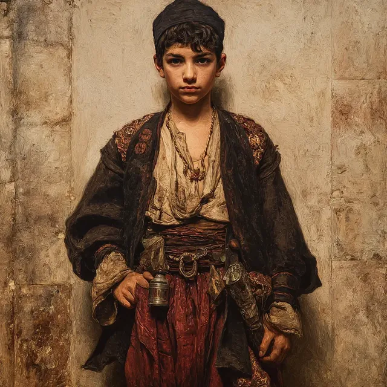

Miray
Miray Ruba Mata Biru, known simply as Miray Ruba Mata Biru, is an adult halfling woman druid who presents as a young boy to blend in with the bustling streets of Constantinople. She is deeply involved in protecting the children of the Undercity, recognized as a guardian figure who stands against the evil eye. With a friendly demeanor, Miray engages in conversations about her responsibilities, reflecting a strong sense of vigilance and duty.
In her role as a protector, Miray is celebrated as an alchemist, showcasing a profound connection to nature and her magical abilities. She wields a quarterstaff empowered with the spell Shillelagh, which enhances her combat effectiveness. During confrontations, she utilizes her druidic powers, particularly through the conjuration of Moonbeam, a radiant mist that deals significant damage to her enemies. In a recent encounter, Miray first engaged an undead priest, attacking it with her empowered quarterstaff, though her initial strike was only partially effective. She later cast Moonbeam to target an armed man, inflicting considerable damage. As the confrontation escalated, she strategically moved the Moonbeam to damage a vampire that emerged, ultimately leading to the vampire’s destruction.
Miray's explorations have also led her to a hidden chamber, where she identified a viscous black liquid as a potion of necrotic resistance and expressed interest in scorpion parts for her alchemical pursuits. After exiting the underground site, she assisted in valuing their loot, confirming the worth of various artifacts and items.
In addition to her protective duties, Miray embodies the spirit of a ten-year-old Turkish urchin named Ahmet. As a courier for his family's laundry, Ahmet navigates the city with a blend of innocence and ambition, inspired by the valor of his father and older brother. Ahmet dreams of becoming a Janissary, a goal that stirs concern in his mother, Fatima. His adventures have taken him to a dig site in the Dardanelles, where he assists with menial tasks and engages in critical moments, showcasing his resourcefulness and adaptability.
Recently, Ahmet has become involved in investigating disturbances at a cemetery, collaborating closely with Sidra al-Najjar. During their exploration, he displayed his knowledge of folklore, particularly tales of Scavengers, mischievous fae known for causing minor trouble. He engaged in dialogue with the Scavengers, negotiating parley and confirming their identity as the "evil spirits" feared by the gravekeeper. After discovering the Scavengers' stash of wine, Ahmet and Sidra confronted an Invisible Attacker, leading to a fierce battle where he utilized his combat skills and tactical prowess to protect his companion and neutralize the threat.
Ahmet's distinctive appearance and stealthy nature allow him to blend into various situations, often taking a proactive role in challenging circumstances. He has demonstrated his druidic abilities by transforming into a black fox with blue eye-shine, enhancing his agility and stealth, and into a large monitor lizard to traverse rooftops. His adventures have included healing a young tiefling named Shehrazat suffering from blood rot, although a rebound effect during the healing process resulted in a burst of fire affecting him and others present. Ahmet intends to seek out other druids for assistance, specifically mentioning Cyrus, a dwarf bead-craftsman, and Deniz, a druid known only in goat form who tends to an Undercity oasis.
In a significant development, Miray inhabited a runaway girl at a campfire, where she was approached by an older boy who listened as she admitted being cast out for magic. He pressed a square piece of paper into her hand, instructing her to use it to reach him in the city before departing into the dark. In the morning, the group compared dreams, and Miray sketched the sigil from memory, producing a convincing approximation. At Osman's Library, Miray covertly cut the string around Ashraf the tortoise’s neck to handle a small key, quickly re-tying the string without alerting him. Later, while investigating a Coastal Manor Garden, Miray summoned a storm and called lightning onto two shadowy, semi-corporeal Janissary soldiers, damaging both. During the fight, she restored Gizem with healing magic and staunched ongoing attrition, then revived Gizem after a shadow's strength-draining attack overwhelmed her.
More recently, a member of the party named Miray examined a soldier’s appearance in a submerged mirror and recognized the look of a Mongol-era warrior. Miray saw a Bichura that vanished after Sidra slapped at it. A weakened boardwalk collapsed under Miray, dropping them into spiked water; however, Miray avoided the spikes and later struck back from the platform edge but failed to connect. Miray crossed the broken stretch to safety. When a remaining Merrow attacked with a harpoon, Miray used discordant whispers that wounded it and drove it away. Miray later wild-shaped into a crocodile and plunged toward the mirror, slipping past two marrows. After being mauled enough to break the crocodile shape, Miray kept their head above the shallow, drained water, then used discordant whispers to strike the fleeing Merrow again. Miray was badly burned when a cursed keyring caused a door to explode in Greek fire.
Through these experiences, Miray Ruba Mata Biru continues to embody the duality of a protector and a curious young adventurer, dedicated to safeguarding the innocent while exploring the mysteries of her world.